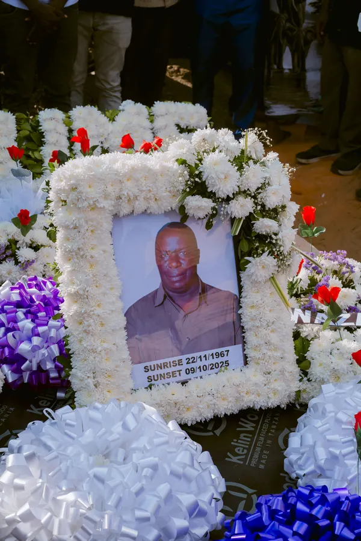
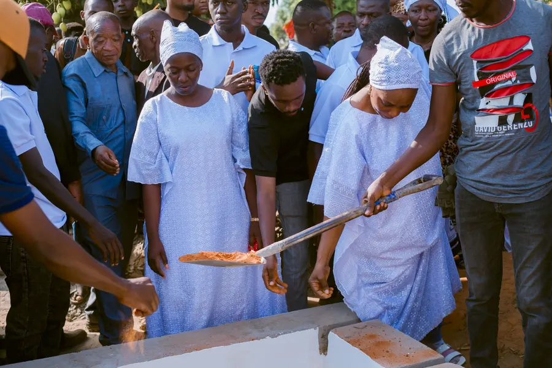

KUKUSANYIKA
Karibu pamoja
Familia na marafiki wakikusanyika, wakifarijiana na kushiriki kumbukumbu.
Tazama kumbukumbu hizi22 Novemba 1967 9 Oktoba 2025
Siku ya kuaga imepita; upendo na kumbukumbu tulizoshiriki zinaendelea kuishi. Album hii inatunza picha za familia na marafiki waliokusanyika kumuenzi William.

Pakua picha“Aliyeishi kwa upendo, huendelea kuishi ndani ya mioyo yetu.”
Kuanzia kukusanyika kwa familia na marafiki, hadi sala na kumuaga kwa mara ya mwisho, tulikuwa pamoja kumuenzi William.
Picha hizi ni ushuhuda wa faraja iliyoshirikishwa, maneno yaliyosemwa na upendo uliomzunguka.
Familia na marafiki wakikusanyika, wakifarijiana na kushiriki kumbukumbu.
Tazama kumbukumbu hiziSala, ushuhuda na maneno ya faraja yakishirikishwa na wote waliokuwepo.
Tazama kumbukumbu hizi
IIIHatua ya mwisho, tuliyoipitia kwa pamoja kwa heshima na upendo.
Tazama kumbukumbu hiziTafuta, fungua, kisha pakua picha unayotaka kuhifadhi.
836picha za familia
Tunakuletea kumbukumbu…
Jaribu neno jingine au chagua sehemu tofauti ya kumbukumbu.
Fungua picha kuona ukubwa wake kamili, kisha tumia kitufe cha kupakua.
Kwa familia na marafiki wote,
asante kwa kuwa pamoja.